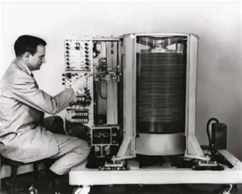
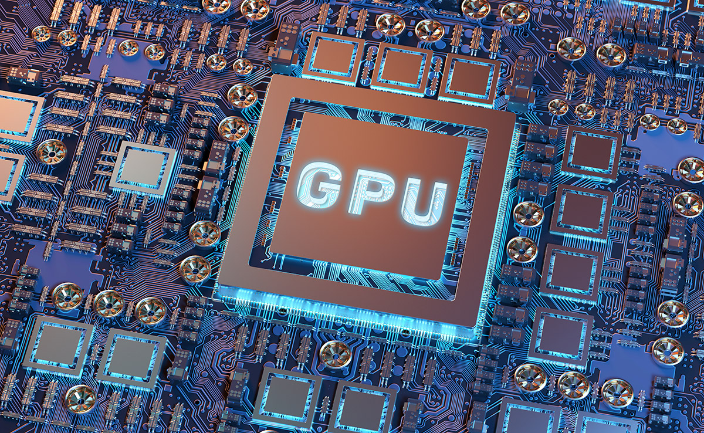

Curiosidades del Mundo del Hardware
Descubre datos interesantes y poco conocidos sobre la evolución y el impacto de los componentes tecnológicos.
üíæ El Origen del Disco Duro
El primer disco duro de IBM en 1956 pesaba más de una tonelada y apenas podía almacenar 5 MB de datos, ¡menos que una sola canción en MP3 de hoy!
üñ•Ô∏è La Ley de Moore
En 1965, Gordon Moore predijo que el número de transistores en un chip se duplicaría aproximadamente cada dos años. Esta ley impulsó la innovación tecnológica por décadas.
üéÆ Tarjetas Gr√°ficas y Videojuegos
Las primeras tarjetas gráficas se diseñaron para mostrar texto y gráficos básicos. Hoy, las GPUs no solo impulsan los videojuegos, también son la base de la inteligencia artificial y el machine learning.
⚡ Memoria RAM
La primera memoria RAM (Random Access Memory) se desarrolló en 1968. Hoy existen módulos DDR5 que son miles de veces más rápidos que los primeros intentos.

üåê Internet y Hardware
El primer servidor web de la historia se creó en 1990 en el CERN, y estaba montado en un computador NeXT de Steve Jobs. Una pieza de hardware que literalmente cambió el mundo.